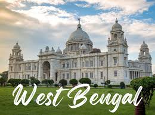

Located in the eastern part of India, West Bengal is a state renowned for its vibrant culture, rich history, and diverse landscapes. Here's a glimpse into what makes West Bengal a captivating destination:
West Bengal boasts a rich historical legacy, with numerous landmarks and architectural marvels that reflect its glorious past. Explore the iconic Victoria Memorial in Kolkata, an imposing monument dedicated to Queen Victoria, surrounded by lush gardens and serene lakes
Marvel at the majestic temples of West Bengal, including the Dakshineswar Kali Temple, Belur Math, and Kalighat Temple, each steeped in history and architectural grandeur, and offering a glimpse into the region's spiritual heritage.
Immerse yourself in the vibrant cultural tapestry of West Bengal, where diverse traditions and customs thrive. Experience the colorful festivals of the state, including Durga Puja, the grandest celebration of Bengali culture, marked by elaborate pandals, traditional music, and dance performances.
Witness traditional art forms such as Rabindra Sangeet, Baul music, and the graceful movements of Kathakali and Chhau dance, which showcase the artistic richness and cultural diversity of the region.
Discover the scenic beauty of West Bengal, from serene beaches to lush forests and tranquil tea gardens. Explore the picturesque hill stations of Darjeeling, Kalimpong, and Mirik, offering panoramic views of the Himalayas and a refreshing escape from the summer heat.
escape from the summer heat. Relax on the sandy shores of Digha and Mandarmani beaches, where you can soak in the sun, enjoy water sports, and savor fresh seafood delicacies amidst the coastal charm of West Bengal.
Indulge in the culinary delights of West Bengal, known for its delectable cuisine and unique flavors. Sample traditional dishes such as Machher Jhol (fish curry), Kosha Mangsho (spicy mutton curry), and Mishti Doi (sweet yogurt), served with aromatic rice and flavorful spices.
Explore the bustling streets and vibrant markets of Kolkata, where you can savor mouthwatering street food delicacies such as Puchka, Kathi Rolls, and Jhalmuri, prepared fresh and bursting with flavors.
West Bengal is renowned for its exquisite handicrafts and traditional art forms, passed down through generations. Explore local markets and artisan villages to admire and purchase authentic Bengali handicrafts, including terracotta pottery, kantha embroidery, and Dokra metalwork.
Witness the skilled craftsmanship of artisans and weavers, who continue to preserve ancient techniques and produce beautiful textiles, sculptures, and artifacts that reflect the cultural heritage of West Bengal.
Plan Your Journey: Whether you're fascinated by historical landmarks, cultural traditions, or natural beauty, West Bengal offers a diverse range of experiences for every traveler. Plan your journey to this enchanting state and immerse yourself in the culture and charm of West Bengal.
